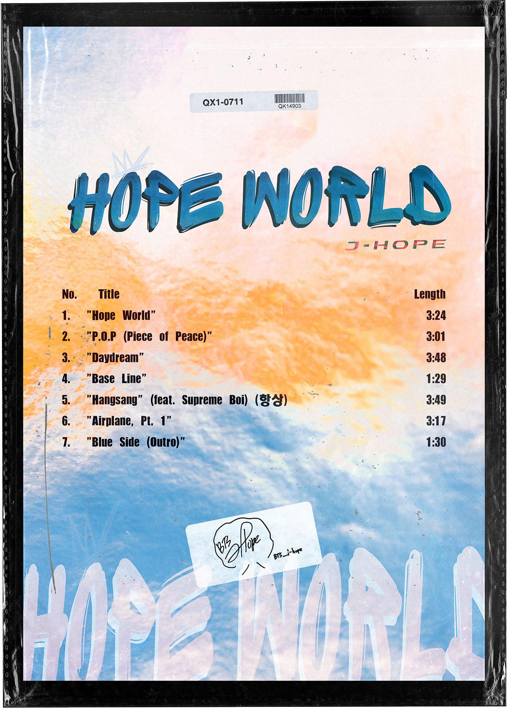
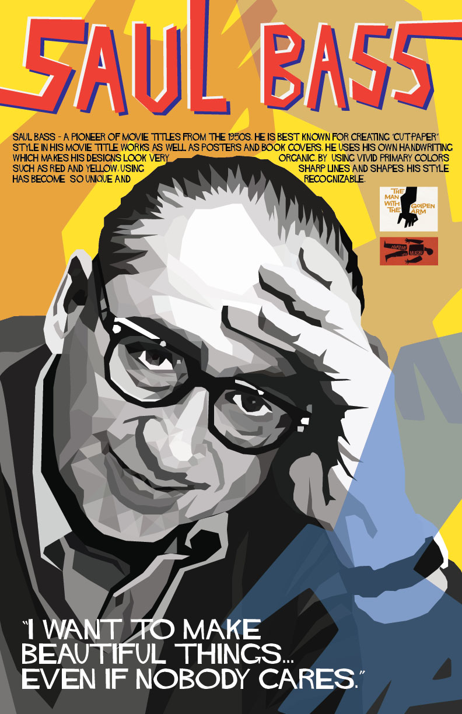
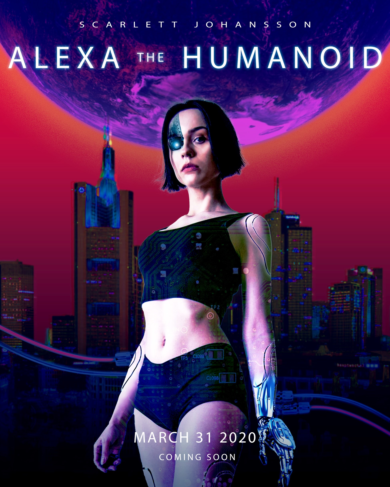

1.
HOPE WORLD – Album CD cover
For my Art74 final project, I recreated Hope World album cover, with a goal of achieving a professional realistic-looking commercial work using Adobe Photoshop. Since Hope World is a debut mixtape of South Korean rapper J-Hope, I aimed for fonts and images that would represent the Hip-hop aesthetic, such as graffiti, paint strokes, and grainy texture. I made several versions and did a lot of experiments on different typefaces, sizes, compositions as well as color schemes before I settled with the best one.

2.

3.
MAP OF THE SOUL – ALBUM COVER
This is an exercise on practicing Photoshop. I recreated the album cover by study the original piece and transform it into a different look based on my interpretation.

1.
GLITCH ART
I made a series of glitch art using Audacity in class Art74. It is so interesting to know that a JPEG file can be encoded as an audio file. By playing with different effects and changing some values of the audio track, the image becomes glitchy and can get very abstract. This is such a fun way to create surprising unexpected artworks.

2.

3.

4.

1.
DIGITAL SELF-PORTRAIT COLLAGE
To describe my transformation of becoming a digital media artist, I created this series of collage which has both traditional and digital elements in each piece. I edited my pencil illustrations on Photoshop using a lot of masking, pen tools, brush tool and color correction. I also overlayed them with some photos of the sky that I took. I chose those photos because I am a sky enthusias who simply appreciates, loves taking and collecting the beauty of the sky. There is always something about the sky that make me feel very calm, peaceful and connected just by looking at it. With all of these elements combined, I hope to create artworks that could represent a part of my personality.

2.

3.

SAUL BASS POSTER
This is the final project that I did in class at De Anza. I used Adobe Illustrator for this whole poster piece. It took quite a bit of time to illustrate Saul Bass portrait as I tried to capture as realistic as possible. I also did research and studied his art style to add on the elements that could represent him best. Specifically, I use his graphic for the book cover that he made – "The Man with the Golden Arm" – to emphasize his signature.

{kind=link}
{kind=link}
{kind=link}
{kind=link}